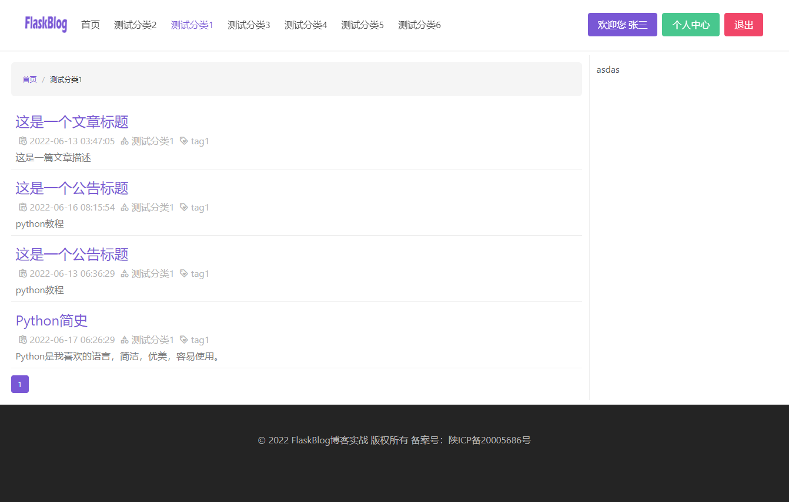

实现分类列表页
在设计数据库字段的时候，我们将分类与文章设置为一对多关系，一个分类下可以有多篇文章，那么导航栏通过上一节我们已经实现了，那么这一节我们就实现每个分类下的文章列表页！
在app/blog/views.py中实现分类页视图
@bp.route('/category/<int:cate_id>')
def cates(cate_id):
# 分类页
cate = Category.query.get(cate_id)
page = request.args.get('page', 1, type=int)
pagination = Post.query.filter(Post.category_id==cate_id).paginate(page, per_page=10, error_out=False)
post_list = pagination.items
return render_template('cate_list.html', cate=cate, post_list=post_list, cate_id=cate_id, pagination=pagination)
这个函数的逻辑也是在之前实现管理后台的时候多次实现，这里我们用了filter的查询方法根据url传进来的分类主键id来查询当前分类下的数据，并对其进行分页！
在app/blog/templates/中创建一个cate_list.html的模板文件
{% extends 'base.html' %}
{% block title %}{{ cate.name }}{% endblock title %}
{% block hero %}{% endblock hero %}
{% block box %}
<div class="columns">
<div class="column is-9" style="border-right:solid 1px #eee ;">
<div class="box is-shadowless has-background-light">
{% block breadcrumb %}
<nav class="breadcrumb is-small" aria-label="breadcrumbs">
<ul>
<li><a href="/">首页</a></li>
<li class="is-active"><a href="#" aria-current="page">{{ cate.name }}</a></li>
</ul>
</nav>
{% endblock breadcrumb %}
</div>
{% block cate_box %}
{% for post in post_list %}
<div class="pl-2">
<h1 class="is-size-4">
<a href="{{ url_for('blog.detail', cate_id=post.category.id, post_id=post.id) }}">{{ post.title }}</a>
</h1>
<p class="has-text-grey-light is-size-6 mt-1">
<span class="icon"><i class="mdi mdi-clipboard-text-clock-outline"></i></span>{{ post.add_date }}
<span class="icon"><i class="mdi mdi-shape-outline"></i></span>{{ post.category.name }}
<span class="icon"><i class="mdi mdi-tag-heart-outline"></i></span>{{ post.tags|join(',') }}
</p>
<div class="has-text-grey mt-1">{{ post.desc }}</div>
</div>
<div class=" dropdown-divider mb-3"></div>
{% endfor %}
{% block pagination %}
<nav class="pagination is-small" role="navigation" aria-label="pagination">
{% if pagination.has_prev %}
<a href="{{ url_for('blog.cates', cate_id=cate.id ) }}?page={{ pagination.prev_num }}" class="pagination-previous" title="This is the first page">Previous</a>
{% endif %}
{% if pagination.has_next %}
<a href="{{ url_for('blog.cates', cate_id=cate.id) }}?page={{ pagination.next_num }}" class="pagination-next">Next page</a>
{% endif %}
<ul class="pagination-list">
{% for page in pagination.iter_pages() %}
{% if page %}
{% if page != pagination.page %}
<li>
<a href="{{ url_for('blog.cates', cate_id=cate.id) }}?page={{ page }}" class="pagination-link" aria-label="Page 1" aria-current="page">{{ page }}</a>
</li>
{% else %}
<li>
<a class="pagination-link is-current" aria-label="Page 1" aria-current="page">{{ page }}</a>
</li>
{% endif %}
{% else %}
<span class=pagination-ellipsis>…</span>
{% endif %}
{% endfor %}
</ul>
</nav>
{% endblock pagination %}
{% endblock cate_box %}
</div>
<div class="column">
asdas
</div>
</div>
{% endblock box %}
该模板中我们查询出了刚才视图中返回的数据，并继承base.html实现了一个一本的样式！
- 最终样式 
实现文章详情页
在app/blog/views.py中实现文章详情页视图
@bp.route('/category/<int:cate_id>/<int:post_id>')
def detail(cate_id, post_id):
# 详情页
cate = Category.query.get(cate_id)
post = Post.query.get_or_404(post_id)
# 上一篇
prev_post = Post.query.filter(Post.id < post_id).order_by(-Post.id).first()
# 下一篇
next_post = Post.query.filter(Post.id > post_id).order_by(Post.id).first()
return render_template('detail.html', cate=cate, post=post, prev_post=prev_post, next_post=next_post)
这段代码不仅实现了文章详情页，还实现了上一篇及下一篇的功能！
通过url我们分别传入了分类cate_id以及当前文章post_id两个主键，之后根据这两个主键获取所属分类的及文章,代码如下：
cate = Category.query.get(cate_id)
post = Post.query.get_or_404(post_id)
在这里我们同时实现了详情页的上一篇及下一篇的功能，根据当前文章的id来判断筛选出上一篇和下一篇！代码如下：
# 上一篇
prev_post = Post.query.filter(Post.id < post_id).order_by(-Post.id).first()
# 下一篇
next_post = Post.query.filter(Post.id > post_id).order_by(Post.id).first()
在app/blog/templates/中创建一个detail.html的模板文件
{% extends 'cate_list.html' %}
{% block title %}
{{ post.title }}
{% endblock title %}
{% block breadcrumb %}
<nav class="breadcrumb is-small" aria-label="breadcrumbs">
<ul>
<li><a href="/">首页</a></li>
<li><a href="{{ url_for('blog.cates', cate_id=cate.id) }}">{{ cate.name }}</a></li>
<li class="is-active"><a href="#" aria-current="page">{{ post.title }}</a></li>
</ul>
</nav>
{% endblock breadcrumb %}
{% block cate_box %}
<div class="pl-2">
<h1 class="is-size-3">
{{ post.title }}
</h1>
<p class="has-text-grey-light is-size-6 mt-1">
<span class="icon"><i class="mdi mdi-clipboard-text-clock-outline"></i></span>{{ post.add_date }}
<span class="icon"><i class="mdi mdi-shape-outline"></i></span>{{ post.category.name }}
<span class="icon"><i class="mdi mdi-tag-heart-outline"></i></span>{{ post.tags|join(',') }}
</p>
<div class="content has-text-grey mt-1">{{ post.content|safe }}</div>
</div>
<hr>
<div class="level">
<div class="level-left">
{% if prev_post %}
上一篇：<a href="{{ url_for('blog.detail', cate_id=prev_post.category.id, post_id=prev_post.id) }}">{{ prev_post.title }}</a>
{% endif %}
</div>
<div class="level-right">
{% if next_post %}
下一篇：<a href="{{ url_for('blog.detail', cate_id=next_post.category.id, post_id=next_post.id) }}">{{ next_post.title }}</a>
{% endif %}
</div>
</div>
{% endblock cate_box %}
增加导航菜单中的url
路径： app/blog/templates/base.html
{% for cate in categorys %}
<b-navbar-item
{% if cate.id == cate_id %}class="has-text-primary"{% endif %}
href="{{ url_for('blog.cates', cate_id=cate.id) }}">
{{ cate.name }}
</b-navbar-item>
{% endfor %}
首页文章url完善
路径： app/blog/templates/base.html
{% for post in posts %}
<div class="column is-4-fullhd is-6-desk">
<div class="card">
<div class="card-image">
<figure class="image is-4by5">
<img src="{{ post.img }}" alt="Placeholder image">
</figure>
</div>
<div class="card-content">
<div class="content">
<p class="title is-4"><a
href="{{ url_for('blog.detail', cate_id=post.category.id, post_id=post.id) }}">{{ post.title}}</a> </p>
<p class="has-text-grey subtitle is-size-6">
{{ post.desc }}
</p>
<time class="has-text-grey" datetime="{{ post.add_date }}">{{ post.add_date }}</time>
</div>
</div>
</div>
</div>
{% endfor %}